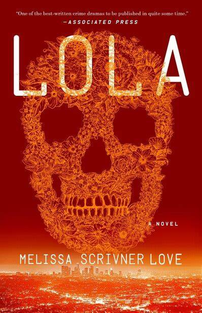

Lola Project: Andy
Throughout the entire book, the archetype Rebel is demonstrated the most in the character Lola, due to multiple characteristics of the Rebel Lola demonstrates.
Lola is the Head of Gang
In the story, Lola is the leader of Crenshaw Six. Her gang member follows her orders and do what she tells them to do. Lola, on the other hand, also sacrifice important things to her for the gang. At the scene where Crenshaw Six was attempting to rob the drug deal between Darrel King and Mr. X, though Lola was the watch out, she was responsible for telling the gang what to do.
“Lola’s place is in the bushes, watching for these uninvited thugs, aggressive police, or any random pedestrians out walking dogs.” Chapter 5
Lawlessness and Cruelty and Caregiving
“She hadn’t had this skill the first time her mother sent a man to her little girl’s bedroom. The ability to pretend came a couple of years later, after Maria Vasquez had pimped Lola out to so many men she was numb, and then, somewhere after the apathy, Lola realized she’d gotten good at what she considered her job—sex.” Chapter 3
Lola hated the lowborn place she is in and cannot get rid of, as well as her mother –who corrupted her. Lola hated her mother who continued to keep Lola in her lowborn rank, and eventually caused her to be a thug.
These, later, lead to Lola believing herself as a dirty being, giving her a reason to do the dirty things. This belief in herself being dirty is also where her Jester cruelty trait comes from.
“Lola knew where Carlos kept the guns. She had gotten one from the safe that morning, waking up knowing Carlos had trapped her brother. Guns and money are like drugs. One taste and you’re hooked.” Chapter 7
“Lola thinks of her own junkie mother, of the men she introduced Lola to, of the things Lola had to do for these men at night so that Maria Vasquez could score her own fix. Lola thinks of all the sleep she lost losing her innocence.
Now, Lola lowers herself to Lucy’s level and speaks so only the two of them can hear. “Are you scared of the men out there?” Chapter 1
On the other hand, Lola did not like this dirtiness in a way: she did not want to be dirty, but, like drugs, she cannot get herself out of it. Due to this, Lola was extremely protective of her little brother Hector and Lucy, these characters all suffered terrible parents who corrupts them, and Lola did not want them to suffer the same tragedy as herself.
“But the part that made the least sense to Lola was that her mother was offering to share her heroin. Lola had grabbed Hector by the arm and shouldered him, whimpering, into the kitchen to run times tables while she chopped peppers and fried meat for dinner.” Chapter 4
Lola hating her lowborn rank, on the hand, also caused her to hate the rich ones who hanged around in the lawless Latino society she was in.
Lola’s conflict with society
““Afghanistan,” Mila says. “It’s where the high-end heroin comes from now. The kind they have at raves and hedge-fund parties. None of this blue-collar stuff the cartel peddles.”
Lola feels a surge in her stomach, more anger than pity now, for this white-collar bitch who just insulted her kind.” Chapter 6
“Mila doesn’t get to finish her question, because Lola shoots her between the eyes.” Chapter 6
Here, in my understanding, Lola killed Mila both because of her identity as a dirty gang leader who must complete a job to save her life, and because she hated someone like Mila –“highborn” white girl in great colleges that hanged around in the Latino society. This killing of Mila is also part of a Jester trait –cruelty.
Lola’s conflict with these “highborn”, especially white, people that hang around being a thug has pushed the plot forward by causing Lola to make decisions like killing Mila.
Meeting the Coleccionista
Lola’s Conflict with herself, Rebel Traits: Risk taking, Bravery
When the Coleccionista came to their building and gave them the quest to stop Darrel King from trading with mr.X, Lola accepted it, not because she obeys the powerful ones, but because Lola wanted a chance to not be the small alley thugs they are.
““Of course, you could fail,” El Coleccionista says. “And if you do…” The man finally shoots a quick look at Lola before taking a sip of coffee. A slurp, and he continues, “We will take her, we will open up her stomach, and we will pull out her guts until she dies.”
Garcia gulps the threat like air, his face reddening with visible fear, but all Lola can think is 10 percent of four million and all of Darrel King’s territory. She recognizes this rare feeling—it is not fear, but ecstasy.” Chapter 2
This, obviously, is a sign of risk taking –a rebel characteristic. In my understanding, Lola’s risk-taking trait action is related to how Lola hated her low born rank. All she could be is someone related to the thug society, and this is a chance for her to become someone else –though still thug, it is different from before.
Here, the risk taking trait is identical to the bravery trait of a rebel when interpretating it.
Lola’s conflict with her own identity has led to her urging for a change, which has also led to her risk-taking trait shown here. Connecting to how society caused Lola to have her identity, it could be understood that society has caused Lola to develop her risk-taking trait.
Going to College
Lola’s desire for change could also be seen here:
“Lola attended two night classes at East Los Angeles Community College before Carlos died. This fact has somehow cemented her as a college girl” Chapter 1
“Here in Huntington Park, “college girl” means Lola dared to want more.”
Chapter 1
Lola has tried to be in a college before, which is unusual in her neighborhood as described. This can be interpreted as a sign that Lola wants to change.
Hector’s failure during the mission
Conflict between Rebel (Leadership) and Caregiver
Though Lola’s Rebel is used by the needs of the Caregiver, these traits conflict when the cared one of the Caregiver went against the Rebel. The conflict between Lola’s two archetypes has pushed to plot forward, causing her to make crucial decisions in the plot.
“In one quick movement, Lola draws the knife and tries to slice clean through Hector’s trigger finger. She wants it to happen fast, to punctuate her “you’re welcome,” but it turns out slicing through bone and sinew is rough work.” Chapter 7
“Still, his petulance cuts her more than a pleading apology, because it reminds her that he is hers.” Chapter 7
As a leader, Lola needs to punish her brother; as a caregiver, she does not want her brother to get hurt. Though it could be partly understood as chopping the finger off to protect Hector, it is also clearly described in the text how mad Lola was at Hector, and how she had to punish Hector because he is part of the gang and she is the gang leader.
Killing Carlos to protect Hector
Caregiver and Jester
“Lola knew where Carlos kept the guns. She had gotten one from the safe that morning, waking up knowing Carlos had trapped her brother. Guns and money are like drugs. One taste and you’re hooked. There was no going back for Hector, just as there would have been no going back for him had Maria succeeded in giving him his first dose of heroin. But Lola couldn’t—and still can’t—punish her mother.” Chapter 7
““Gonna go far, my man,” Carlos was saying to Hector, his arm around the boy’s shoulders even as Lola put a bullet between his eyes.” Chapter 7
Lola killed Carlos to protect her baby brother Hector from entering the dirtiness that she is in. Lola’s identity as a young girl (stereotypical) conflict with her identity as a dirty thug, making the tension of the story at this part extremely high, as a person is killed by a young girl (implies harmlessness) in such an unnoticed way.
Both her caregiver archetype and her cruelty archetype can be shown here: as she used her dirtiness to attack the ones who did what her caregiver did not want.
Women but gang Leader
Individuality
Lola lived in a rather lawless Latino Society where patriarchy exist everywhere, especially for thugs like Lola.
When El Coleccionista approached the Crenshaw Six for giving them a mission, Hector was assumed to be the leader of Crenshaw Six, and no one would expect a woman like Lola to be the leader of the gang.
“He wouldn’t change the gang name from four to five for her—she was a woman, she cooked his food and washed his shorts, which up until she found econ and business and chemistry had been fine.” Chapter 7
Lola’s previous boyfriend, Carlos, wouldn’t even view Lola, a woman, as a person.
Here, Lola’s relationship with her boyfriend is also revealed to be based on sexual needs instead of romance. Furthermore, this shows how Lola is independent and has a weak connection with others.
However, Lola, in the story, became the leader of the gang, which is absolutely opposite to the position of a woman in a gang. These elements of Lola deepen her complexity and increases the tension of the character.
Lola’s Evolution Throughout the text
I believe, throughout the text, Lola did not have any obvious change. According to our previous interpretation on Lola as a character, Lola is an already developed character that has been corrupted by her mother and the environment she is in. Lola has already seen most of the dirty things in the society, and gave herself a mask called “dirtiness” to put on as a reason to do all the things she does.
On the other hand, there weren’t many things that could change Lola, and none of them happened in the story. Lola did not love people other than Hector and perhaps Lucy, and her mask prevented her emotions from interacting with what she experience.
Changes Before the Story Started
The changes on Lola described in the story, I would say, are mostly in Lola’s memories.
“It was only after, lying next to him on the hard floor in a sweaty clean lemon haze, that she was thankful she knew how to pretend affection when she felt resentment. She hadn’t had this skill the first time her mother sent a man to her little girl’s bedroom. The ability to pretend came a couple of years later, after Maria Vasquez had pimped Lola out to so many men she was numb, and then, somewhere after the apathy, Lola realized she’d gotten good at what she considered her job—sex.” Chapter 3
Lola’s mother used the young Lola as a tool to obtain money for buying drugs, and the start of this is a crucial point of the corruption of Lola. It could be interpreted that Lola hates her mother from now, developing her cruelty trait and one of the only parts that surpasses her “dirtiness” mask –child of terrible parents.
“Lola herself had gotten the skank label a couple of times in high school, from a girl bully jealous of her and her book smarts and her curving pear hips. Lola hadn’t gotten sad. Instead, she had channeled all her anger into fucking the bully’s boyfriend so good he would never go back to the abusive bitch. But she was younger then, fourteen, and the boyfriend she fucked was Carlos, and she has to wonder now if that skank label set her on a path she could never reverse.” Chapter 18
Lola decided to become the girlfriend of the head of the bullies in school so that the bullies stop their aggression on her. This, as described in the book was how she entered Crenshaw Six, and how she entered the world of thugs. These led to Lola having to become a cruel one, to protect herself and do her job as a thug.
“Lola knew where Carlos kept the guns. She had gotten one from the safe that morning, waking up knowing Carlos had trapped her brother. Guns and money are like drugs. One taste and you’re hooked. There was no going back for Hector, just as there would have been no going back for him had Maria succeeded in giving him his first dose of heroin. But Lola couldn’t—and still can’t—punish her mother.” Chapter 7
““Gonna go far, my man,” Carlos was saying to Hector, his arm around the boy’s shoulders even as Lola put a bullet between his eyes.” Chapter 7
“Jorge followed Garcia’s lead. It was only Marcos whose loyalty was still in question. Hector was Lola’s brother. Hector was a given, and with her as leader, she thought, she could protect him.” Chapter 7
Carlos bringing the only one that Lola cares about –her baby brother, Hector— into the dirty world she lives in led to her killing Carlos, making her be the leader to Crenshaw Six, and becomes a leader. This point, I believe is when the character Lola we see in the story is fully developed, specifically her leadership trait as a rebel.
References
Docimo, Katherine. “Types of Conflict in Literature.” Storyboard That, www.storyboardthat.com/articles/e/types-of-literary-conflict. Accessed 5 Jan. 2024.
Weisfeld, Vicki. “Lola.” Crime Fiction Lover, 22 Mar. 2017, crimefictionlover.com/2017/03/lola/.
